Mean Field Solution of Ising Model
Now that we understand the variational principle and the non-interacting Ising Model, we're ready to accomplish our next task. We want to understand the general d-dimensional Ising Model with spin-spin interactions by applying the non-interacting Ising Model as a variational ansatz. In other words, we want to use what we just derived for independent, uncorrelated spins as a trial Hamiltonian in a variational treatment of the full Ising model.
As we'll see, we'll be able to interpret our results as a mean-field model, where each of the spins on the Ising lattice experiences the ‘‘average’’ field produced by all its neighbors. We'll discuss whether or not this brutal averaging is justified, and talk about under what circumstances it's more or less reasonable.
As an added bonus, we'll also encounter our first example of a continuous phase transition. In this dramatic process, the spins go from a disordered random phase with no overall magnetization to an distinct low-temperature ordered ferromagnetic phase where a macroscopic fraction of the spins are all aligned in the same direction. It's really quite surprising that Nature exhibits these sorts of marvelous ‘‘collective conspiracies’’, and it's even more surprising that they occur at a single well-defined temperature called the critical temperature  .
.
Finally, we'll talk about how to figure out the value of the critical temperature by drawing a picture and seeing where two graphs intersect. Sometimes you can discover the cleverest things in the silliest ways…
Okay let's get started.
We solved the 1D Ising model by using transfer matrices…but why can't you solve the general n-dimensional Ising model with transfer matrices?
Variational Solution to Ising Model
The game plan for today is to solve the general Ising model
by using a trial Hamiltonian of the form

Here our full Ising model has an energetic coupling between neighboring spins  and
and  and the external field
and the external field  acting on all the spins. In our variational ansatz , we pretend that the spins are actually decoupled from each other (that is, there's no terms), and that each of the spins instead experiences an ‘‘effective external field’’
acting on all the spins. In our variational ansatz , we pretend that the spins are actually decoupled from each other (that is, there's no terms), and that each of the spins instead experiences an ‘‘effective external field’’  . (We'll discuss how to interpret later on.)
. (We'll discuss how to interpret later on.)
Our objective here is to find the values of that make our trial Hamiltonian the ‘‘best’’ possible approximation to the actual Hamiltonian. As we learned, the variational principle says us that the ‘‘best’’ value of is the one that minimizes the variational free energy

(Remember that the subscript means that we're finding thermal averages using the weights from the trial ensemble. This statement is much fancier than it sounds; it just means that whenever we see something such as  , we just replace it whatever the solution to the trial Hamiltonian was. For instance, in this example, we're using the non-interacting Ising model as a trial Hamiltonian, so we plug in the formulas at the bottom of the last page.)
, we just replace it whatever the solution to the trial Hamiltonian was. For instance, in this example, we're using the non-interacting Ising model as a trial Hamiltonian, so we plug in the formulas at the bottom of the last page.)
Let's begin.
Finding the variational free energy
We have no recourse but to plug everything into the formula for  . We find that
. We find that

or combining terms,
And since expectations values are linear, we can pull the expectation values inside to go around the sigmas. (If you want to convince yourself of this, you can try writing out the difinition of .)

Before moving on, we can make one more simplification: since we picked a non-interacting trial Hamiltonian, the spins are uncorrelated, so just factors into  . (We can't always do this; we just happened to pick a non-interacting trial Hamiltonian today.)
. (We can't always do this; we just happened to pick a non-interacting trial Hamiltonian today.)
(I changed the labels of the indices in preparation for the next step where we differentiate w.r.t. .) At this point, we can expand out our expressions for 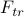 and  , but a lot of them will cancel out later on, so for now, we'll just leave this expression as it is. Prof. Kivelson calls this ‘‘being clever.’’ I call it ‘‘hindsight is 20-20.’’
, but a lot of them will cancel out later on, so for now, we'll just leave this expression as it is. Prof. Kivelson calls this ‘‘being clever.’’ I call it ‘‘hindsight is 20-20.’’
Finding the derivative
Since we want to minimize with respect to the variational parameters , we just take the derivative and set it equal to zero. Nothing particularly fancy here yet. For now, we'll leave everything in terms of 's because we're ‘‘clever.’’
When we hit with a :
The first term gives us a . You can see this is true by plugging in
 and then expanding out the partition function…or if you want some thermodynamic justification, read the Remark at the bottom of this page.
and then expanding out the partition function…or if you want some thermodynamic justification, read the Remark at the bottom of this page.For the second term, the derivative only hits the terms involving spin
 , because the trial Hamiltonian only had terms which looked like . In the nearest-neighbor-sum, there is one term for each nearest neighbor of site , so we end up with a sum over nearest neighbors
, because the trial Hamiltonian only had terms which looked like . In the nearest-neighbor-sum, there is one term for each nearest neighbor of site , so we end up with a sum over nearest neighbors  of
of 
In the last term, we use the product rule. When we hit the coefficient, we get
, and when we hit the sigma we get .
So the derivative of the variational free energy ends up being

where in the second sum, I'm summing over sites that are nearest neighbors (n.n.) of site .
Now time for some magic: the first and the third term cancel out, and then we can factor out a from what's left! And then when we set the derivative equal to zero, we're left with
![0 = frac {partial F_{var}} {partial b_j} = left[-J sum_{i , n.n.,j} langlesigma_irangle_{tr} + b_j - hright] {partial langlesigma_jrangle_{tr} over partial b_j}](eqs/4342851219466996748-130.png)
or

Finally, at this point we finally need to plug in our expression for from the previous page; we end up with a relation between the external field of a spin and the external field of its neighboring spins  .
.
Translational invariance
Hooray, we finally have an expression for the 's that satisfy our variational condition . Unfortunately, all the 's are related to each other in a nasty sort of way involving hyperbolic tanhs, so it all looks kind of messy.
So to proceed further, we make the assumption of translational invariance that all spins really experience the same ‘‘external’’ field; i.e., that equals the same  for all the sites .
for all the sites .
What's the motivation exactly for assuming  ? I…don't quite know honestly. We tried to justify it in section by some argument about it must be the same for all sites in zero-temperature limit, but in my opinion, the argument falls flat because the 's depend on temperature anyways, so why doesn't all hell just break loose when you turn on the thermostat? I think the actual justification is another one of those ‘‘you can't stop me’’ reasons…
? I…don't quite know honestly. We tried to justify it in section by some argument about it must be the same for all sites in zero-temperature limit, but in my opinion, the argument falls flat because the 's depend on temperature anyways, so why doesn't all hell just break loose when you turn on the thermostat? I think the actual justification is another one of those ‘‘you can't stop me’’ reasons…
This begs the question of why we even bothered putting an index on the parameter in the first place, if we were gonna get rid of it at the end of the derivation anyways. I don't know. Go ask the professor.
No matter our reasoning for assuming why , it lets us simplify our result quite a bit: we only need to find one unknown now. The on the LHS is the same as on the RHS. Our sum over the nearest neighbors of site ends up being the same for each of its neighbors, so rather than summing, we just need to multiply by the number of nearest neighbors  .
.
These simplifications give as an equation for in terms of itself as

where is the number of nearest neighbors in the Ising model.
The number of nearest neighbors in an Ising model on a 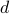-dimensional hypercube lattice is  . For instance, on a chain (), you have 2 neighbors to your left and right; on a square grid (), you have 4 neighbors (left, right, up, down); on a cubic lattice (
. For instance, on a chain (), you have 2 neighbors to your left and right; on a square grid (), you have 4 neighbors (left, right, up, down); on a cubic lattice ( ), you have 6 neighbors (), and so on and so forth.
), you have 6 neighbors (), and so on and so forth.
It's confusing to write  because the little looks like a subscript on 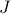, which is reminiscent of the
because the little looks like a subscript on 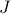, which is reminiscent of the  spin operator in quantum mechanics (and also reminiscent of a certain rapper…)
spin operator in quantum mechanics (and also reminiscent of a certain rapper…)
On the other hand, means a zeptojoule or Joules! And wouldn't you know, the thermal energy is typically on the order of zeptojoules; at room temperature , it's roughly 4 zJ….I swear there's a conspiracy going on here.
Solving for b
At this point, we have an expression involving on the LHS and the RHS. If we think back to the bigger picture, we have just learned that the value of which satisfies this equation is the ‘‘best’’ possible value of in our trial Hamiltonian. Unfortunately, we can't explicitly solve for in a closed-form way…so how do we proceed further?
We'll appeal to the maxim: when in doubt, simplify things and draw a picture. So let's set  for now, and draw a picture, and see if we can gain any qualitative insight.
for now, and draw a picture, and see if we can gain any qualitative insight.
Our strategy here is to plot both sides of the equation and see where the graphs intersect. The intersection points will tell us the solutions for . In this case, we want to where the graphs of  and intersect:
and intersect:
Surprisingly, the number of graph crossings depends on the temperature! This is by far the coolest thing we've discovered in the entire class so far: the behavior of the mean-field Ising model is completely different at low temperatures than at high temperatures. We've discovered a phase transition!
If you start out at high temperature, you'll only find a trivial solution at  , but when you lower the temperature past a special critical temperature , all of a sudden, there will be nonzero solutions as well. This is rather remarkable; it tells us the system behaves dramatically differently depending on whether 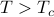 or 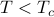. The high-temperature regime is called the paramagnetic phase and the low-temperature regime is called the (anti)ferromagnetic phase.
, but when you lower the temperature past a special critical temperature , all of a sudden, there will be nonzero solutions as well. This is rather remarkable; it tells us the system behaves dramatically differently depending on whether 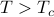 or 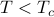. The high-temperature regime is called the paramagnetic phase and the low-temperature regime is called the (anti)ferromagnetic phase.
Physical interpreation
Let's think back to our main physical observable, the magnetization density 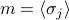 which tells us whether the spins tend to align up or down in thermal equilibrium. (To calibrate our intuition, it's helpftul to review how non-interacting spins behave at different temperatures.)
In our mean-field model, the magnetization density is given by  , which means at low temperatures when is nonzero, there is a net nonzero magnetic moment in the system.
, which means at low temperatures when is nonzero, there is a net nonzero magnetic moment in the system.
Wait a second. Let's think about how unusual this is. Since we dialed down the external field to zero, there is no energetic incentive whatsoever for the spins to want to align one way versus another. There's nothing pulling on the spins to make them want to point in a particular. Yet we've just discovered that there's a nonzero net magnetic moment at low temperatures; in other words, that all the spins are preferring to point in some direction over the other! How is this possible?
Well, believe it or not, this is how nature behaves. It's what you might call a collective conspiracy – none of the individual spins feel an external field, but if enough of them happen to fluctuate and point in a particular way, they'll set up a strong enough local field to convince their neighbors to the same way – so strong, in fact, that a nontrivial fraction of the  spins also ‘‘get in on the conspiracy’’, and the material develops long-range order and gains a macroscopic magnetic moment! Truly remarkable, especially if you consider just how many spins there are (), and just how weak the magnetic field of each individual spin is. Magical.
spins also ‘‘get in on the conspiracy’’, and the material develops long-range order and gains a macroscopic magnetic moment! Truly remarkable, especially if you consider just how many spins there are (), and just how weak the magnetic field of each individual spin is. Magical.
So to summarize, we've just discovered a conspiracy:
At high temperatures , the spins exhibit a disordered paramagnetic phase, pointing in every which way. The average magnetization of the system is zero.
At low temperatures , the spins exibit an ordered ferromagnetic phase, where they all conspired to point in one direction (even when there's no external field telling them which way to point!) The average magnetization of the system is (shockingly!) nonzero.
How come long-range order only develops at low T?
How come long-range order only develops at low T? There are a number of explanations, some of which are more enlightening than others:
Look at the graphs, goddammit! We just proved it!
At high temperatures, all the spins are jiggling around with so much thermal energy that any local conspiracies of all-up-zones or all-down-zones are quickly jiggled away out of existence before they have time to spread into a macroscopic fraction of the material.
We can also an argument for the phase transition by thinking about the two terms in the free energy  . Each of the phases has an ‘‘energy’’
. Each of the phases has an ‘‘energy’’  and an ‘‘entropy’’
and an ‘‘entropy’’  , and depending on the value of the temperature
, and depending on the value of the temperature  , the free energy of one phase might be higher than the other. (Of course this is all somewhat qualitative, I'm being a bit loose with my language here…don't take this argument too seriously!)
, the free energy of one phase might be higher than the other. (Of course this is all somewhat qualitative, I'm being a bit loose with my language here…don't take this argument too seriously!)
In the disordered paramagnetic phase, the spins can point in any which way, so there's lots of possible configurations (high entropy, happy!), but there's very little energetic reward because the spins haven't chosen to align (high energy, sad!).
In the ordered paramagnetic phase, the spins have all conspired to point (mostly) in one direction, so there are less possible configurations for them (low entropy, sad!), but since they're neatly lined up in an energy-minimizing manner, there's a glorious energetic reward (low energy, happy!)
Which phase has the lower free energy? At high temperatures, when the entropic contribution is more heavily favored, the paramagnetic phase flies off to an entropic heaven of possibilities, whereas at low temperatures, when all the system wants to do is to minimize energy, the orderly ferromagnetic phase wins out.
Solving for the critical temperature
Alright, enough qualitative remarks, I'm starting to sound like a chemist. Let's move on to solve for the critical temperature 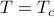.
Let's look at our pictures again:
Our goal here is to find the special temperature that separates the nonzero-solution-regime from the no-nonzero-solution-regime (sorry, these words are confusing). There's a simple condition that tells you whether or not the green curve will hit the blue curve again after . Can you figure it out by staring at the picture?
Here's the secret: The green curve has to be steep enough at for the blue curve to ‘‘catch up to it’’ later on and intersect the green line again. If the green line's steeper than the blue line at , then there'll be a nonzero solution for , and if it's shallower, there won't be. And if the green line is exactly as steep as the blue line at , then we're at the critical temperature taht separates the two possibilities. Clever, eh?
This little observation gives us a mathematical procedure to find the critical temperature: we take the derivative of the LHS and RHS, set them equal to each other at , and solve for 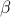. The slope of the blue curve is 1, and the slope of the green curve at is
When we set the two slopes equal to each other, we find that or .
Continue to interpreting the mean-field solution.
Why does taking a derivative of the free energy w.r.t. the external field give you the magnetization ?
Well, you can see this directly by plugging in  and then expanding out the partition function. It's a pretty fun exercise to work this out yourself…remember that …
and then expanding out the partition function. It's a pretty fun exercise to work this out yourself…remember that …
If you're feeling more thermodyanmically inclined, you can also convince yourself that via the following thermodynamic argument. (Now I'm calling the external field  and the magnetization
and the magnetization  in the true thermodynamic spirit!) Ah yes, thermodynamics…your old friend…I'll gloss over a lot of the details because, because this is a statistical mechanics course, not a thermodynamics course.
in the true thermodynamic spirit!) Ah yes, thermodynamics…your old friend…I'll gloss over a lot of the details because, because this is a statistical mechanics course, not a thermodynamics course.
Okay here we go. When we include the external magnetic field into a thermodynamic treatment, our internal energy function gains an extra parameter . The external field gives us another handle to perform work on the system; when we twiddle it by an amount  , the energy of the system changes by an amount
, the energy of the system changes by an amount  , where we recognize the magnetization
, where we recognize the magnetization  as the conjugate variable to the external field . (Think back to E'n'M why magnetic dipole times magnetic field gives you an energy…or maybe think to a quantum mechanical spin…)
as the conjugate variable to the external field . (Think back to E'n'M why magnetic dipole times magnetic field gives you an energy…or maybe think to a quantum mechanical spin…)
Anyways, once we include a magnetic field, we can either change the internal energy by adding some heat or by performing some magnetic work  , which means that the total differential of the internal energy is
, which means that the total differential of the internal energy is
However, since we're considering the Ising model in a canonical ensemble at a fixed temperature , it doesn't make much sense to talk about derivatives of the (internal) energy , because is a natural function of the entropy rather than the temperature . So even though we can find the magnetization in principle as a derivative of the internal energy as , it's pretty physically useless to do so, because we're holding entropy constant in the derivative, rather than the temperature.
To account for this issue, we perform a Legendre transformation to the free energy

which then becomes a natural function of the temperature as ! (I don't have room to actually prove why this is the case in this little remark box…I'm already going way over my quota today in this little aside.) The differential of free energy can then be expressed as
from which we can read off the magnetization

where the derivative is now taken at a fixed temperature rather than at fixed entropy, meaning that it aligns with our treatment of the Ising Model as a constant-temperature canonical ensemble of statistical mechanics.
Okay, to be fair, I didn't really prove anything in the above, I just kind of pulled the term out of thin air and then waved my hands around for a sort of ‘‘plausibility’’ argument. But I do think it's a reasonable sort of thing to sa. Hooray, thermodynamics!